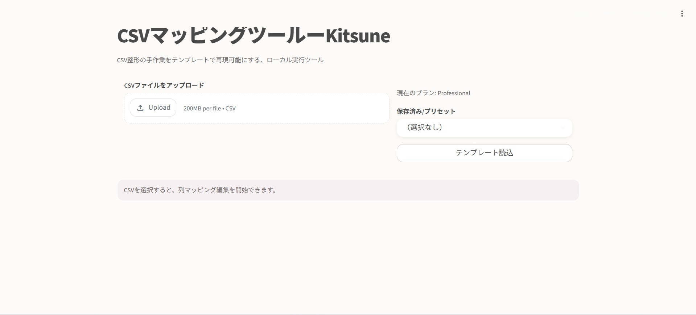
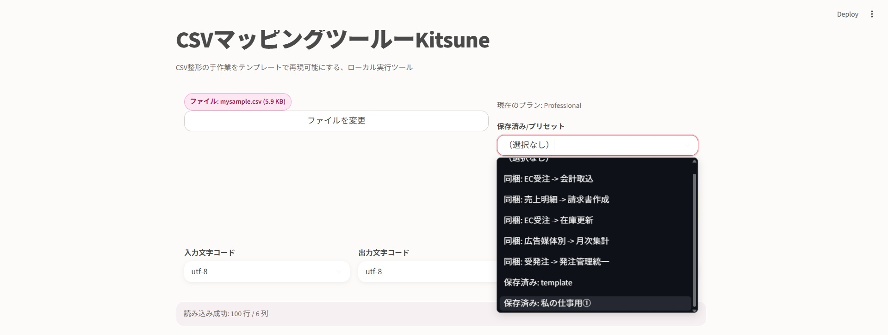
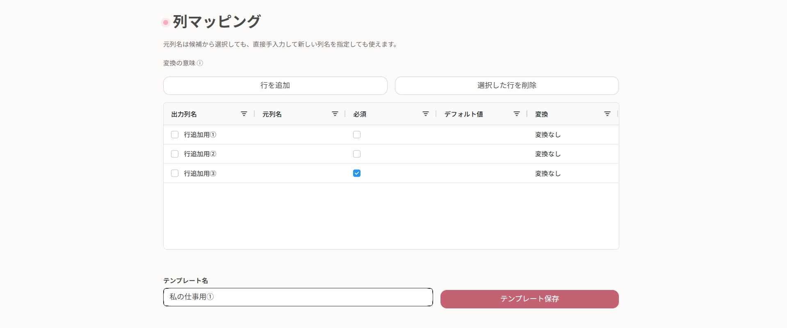
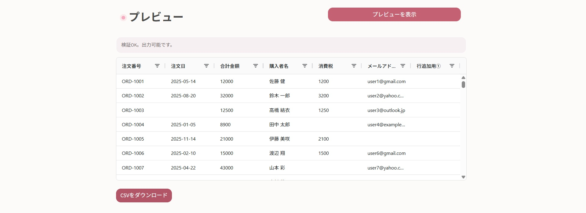

テンプレ化で繰り返し作業を削減
一度設定すれば、次回以降はワンクリックで再現できます。
CSV Mapping Tool
テンプレ化で、2時間の作業を最短10分へ。
フリーランス・中小企業向けに、CSV整形の手作業地獄を終わらせるローカル実行ツールです。

一度設定すれば、次回以降はワンクリックで再現できます。
手作業を減らし、ヒューマンエラーを最小化します。
属人化を防ぎ、作業を標準化できます。




0円
体験版
2,980円
テンプレ保存 1件
5,980円
テンプレ保存 無制限
「Starter」「Professional」をご利用いただく場合、事前に利用規約をよくお読みになり、 「Free」をお試しの上でご判断ください。
ZIP内ファイル（requirements.txt, plan_config.json, templatesフォルダ等）は削除・改名しないでください。
フォルダ名の変更は可（展開後の内部構成は維持）。
A. 入力文字コードを utf-8 / cp932 で切り替えてください。
A. 同一環境内で保持可能です。
A. 基本操作の体験と出力確認が可能です。
本規約は、CSVマッピングツール Kitsune（以下「本製品」）の利用条件を定めるものです。購入者または利用者（以下「利用者」）は、本規約に同意のうえ本製品を利用するものとします。
販売者は、利用者に対し、本規約に従うことを条件として、本製品を日本国内において非独占的・譲渡不可で利用する権利を許諾します。利用者は、自己または自己の所属組織内業務目的に限り本製品を利用できます。
本製品に関する著作権、商標権、ノウハウその他一切の知的財産権は、販売者または正当な権利者に帰属します。本規約により、知的財産権の譲渡は一切行われません。
利用者は、本製品の利用にあたり、日本国内の関係法令（個人情報保護法、著作権法、不正競争防止法、下請法、業法等を含むがこれらに限られない）および自社内規程を遵守するものとします。入力データに含まれる個人情報・機微情報の取扱いについて、利用者自身の責任で適法性を確保するものとします。
本製品への入力データ、出力データ、テンプレート設定の管理責任は利用者にあります。必要に応じてバックアップ、アクセス制御、端末保護、保存先管理等の安全管理措置を講じるものとします。
本製品はローカル実行を前提としますが、利用環境起因の情報漏えい・改ざん・消失リスクを完全に排除するものではありません。販売者は合理的な範囲で品質向上に努めますが、利用者環境起因の事故について保証しません。
本製品は「現状有姿」で提供され、特定目的適合性、完全性、正確性、継続性、無停止性、無瑕疵性を含む明示または黙示の保証を行いません。利用者は、出力結果を業務利用前に自己責任で検証するものとします。
販売者は、故意または重過失による場合を除き、本製品の利用または利用不能に関連して生じた間接損害、特別損害、逸失利益、データ消失損害等について責任を負いません。責任を負う場合でも、法令上許容される範囲で責任総額は当該利用者が支払った本製品代金相当額を上限とします。
本製品について返金は行いません。購入前に動作環境・要件をご確認ください。
販売者は、必要に応じて本規約を変更できるものとします。重要な変更は販売ページまたは配布ドキュメント等で周知します。
本規約は日本法に準拠し、日本法に従って解釈されます。本規約または本製品に関して紛争が生じた場合、販売者所在地を管轄する地方裁判所または簡易裁判所を第一審の専属的合意管轄裁判所とします。